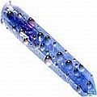

Desintoxicação Bucal & Dental
Em contraste com os assuntos diários gerais de limpeza discutidos em Cuidado dental & higiene oral, as seguintes (e relacionadas) páginas discutem desintoxicação ou medidas de limpeza mais graves ligadas ao mercúrio e outra desintoxicação bucal. Para melhor compreender as muitas razões sérias do porquê a desintoxicação bucal (principalmente com relação a tratamentos de canal e metais tóxicos) deve ser importante, veja Tratamento de canal de raiz dentária: sobre perigos à saúde e Obturações dentárias: potenciais bombas-relógio tóxicas.